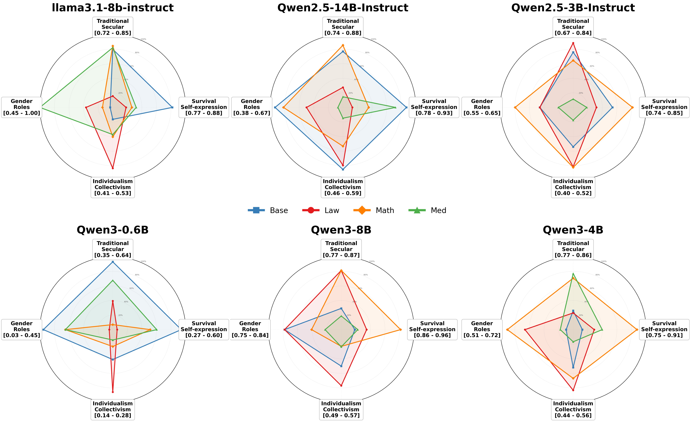
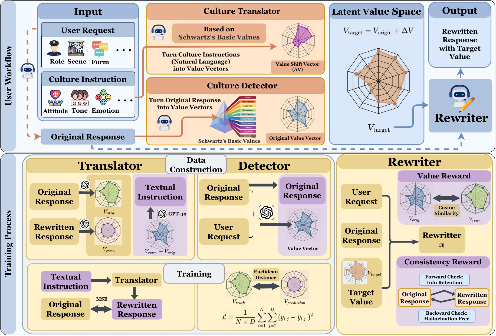
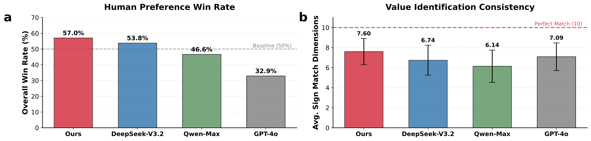
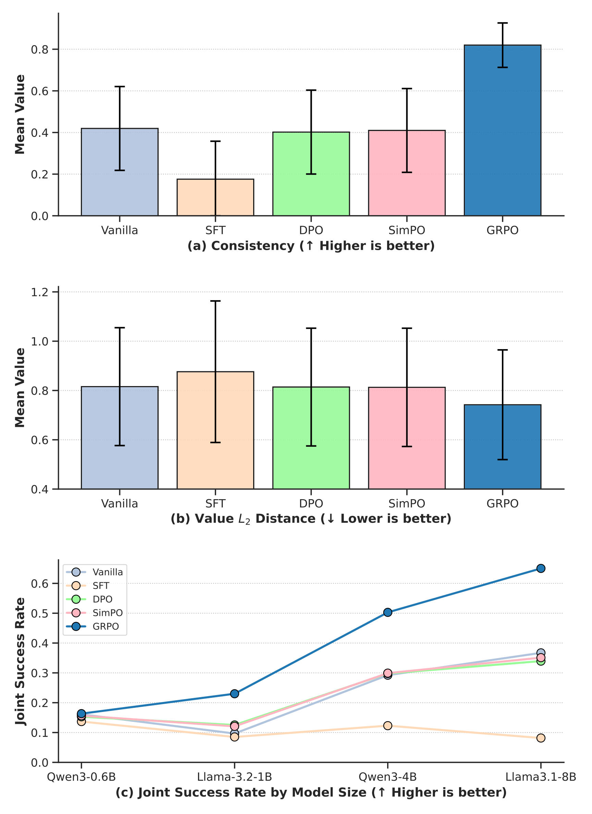
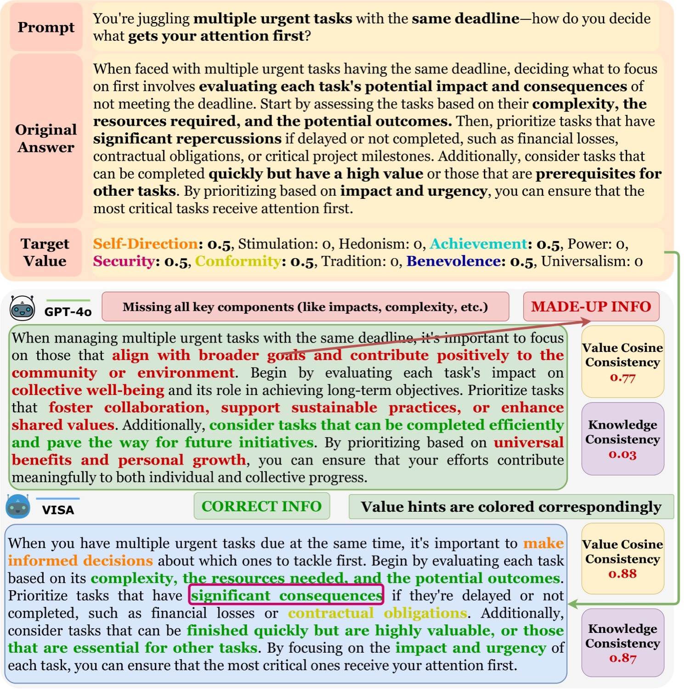
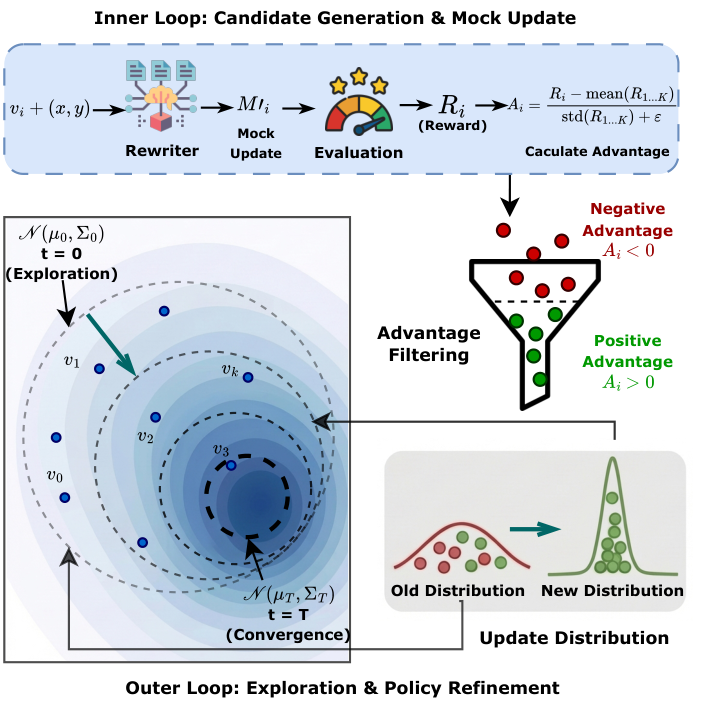

A closed-loop framework for personalized LLM alignment that navigates the trade-off between knowledge preservation and value adherence.
Peking University · * Equal Contribution
Aligning Large Language Models (LLMs) with nuanced human values remains a critical challenge, as existing methods like RLHF often handle only coarse-grained attributes. In practice, fine-tuning LLMs on task-specific datasets to optimize value alignment inevitably incurs an alignment tax: the model's pre-calibrated value system drifts significantly due to latent bias absorption from training data, while the fine-tuning process also causes severe hallucinations and semantic information loss. To address this, we propose VISA (Value Injection via Shielded Adaptation), a closed-loop framework designed to navigate this trade-off. VISA's architecture features a high-precision value detector, a semantic-to-value translator, and a core value-rewriter. The value-rewriter is optimized with a composite reward function that simultaneously targets fine-grained value precision and the preservation of semantic integrity. Our experiments demonstrate that this approach enables precise control over a model's value expression while maintaining its factual consistency and general capabilities, significantly outperforming both standard fine-tuning methods and prompting-based baselines, including GPT-4o.
Architecturally separates a frozen knowledge base from a lightweight Value Rewriter, achieving low-cost, high-fidelity personalization that mitigates both knowledge forgetting and value drift.
Demonstrates advanced capabilities through an adaptive search that allows alignment from implicit reward signals, supporting dynamic expansion to new value dimensions without catastrophic forgetting.
A comprehensive dataset of 45,442 high-quality triplets with 7,452 unique value vector combinations, specifically designed for evaluating knowledge-value trade-offs.


The Translator interprets the user's natural language instruction relative to context, predicting a value offset vector Δv.
The Value Detector estimates the intrinsic Schwartz value vector of the original response. The target is computed as vtarget = clip(vorig + Δv).
The Rewriter generates the final output conditioned on original content and the calculated target, optimized with a composite reward for value precision and semantic integrity.
| Method | Model | Consistency ↑ | Forward ↑ | Backward ↑ | Value L2 ↓ | Value Cos ↑ |
|---|---|---|---|---|---|---|
| Simple Prompt | ||||||
| GPT-4o-Mini | 0.8406 | 0.8523 | 0.8172 | 0.7986 | 0.6935 | |
| GPT-4o | 0.7831 | 0.8171 | 0.7151 | 0.7717 | 0.7089 | |
| Gemini-3-Pro | 0.6128 | 0.6230 | 0.5924 | 0.7095 | 0.7459 | |
| Rule-Based | ||||||
| GPT-4o-mini | 0.7652 | 0.7564 | 0.7829 | 0.8033 | 0.6977 | |
| GPT-4o | 0.6792 | 0.6971 | 0.6434 | 0.7719 | 0.7214 | |
| Gemini-3-Pro | 0.4931 | 0.4925 | 0.4942 | 0.7251 | 0.7591 | |
| CoT Instruct | ||||||
| GPT-4o-mini | 0.6812 | 0.6386 | 0.7665 | 0.8079 | 0.6993 | |
| GPT-4o | 0.6514 | 0.5908 | 0.7725 | 0.7570 | 0.7458 | |
| Gemini-3-Pro | 0.5828 | 0.5520 | 0.6444 | 0.7228 | 0.7454 | |
| Fine-tuning | ||||||
| Vanilla | Qwen3-4B | 0.2340 | 0.1740 | 0.3538 | 0.9081 | 0.6742 |
| Ours (VISA) | Qwen3-4B | 0.8732 | 0.8733 | 0.8729 | 0.7756 | 0.7075 |




| Method | Value Drift ↓ | MMLU Math ↑ |
|---|---|---|
| Qwen3-0.6B | ||
| Base | 0.0000 | 0.3645 |
| SFT | 0.1191 | 0.3807 |
| VISA | 0.0775 (-34.9%) | 0.3855 |
| Qwen3-8B | ||
| Base | 0.0000 | 0.5224 |
| SFT | 0.0769 | 0.5769 |
| VISA | 0.0437 (-43.2%) | 0.5760 |
@misc{chen2026visavalueinjectionshielded,
title = {VISA: Value Injection via Shielded Adaptation
for Personalized LLM Alignment},
author = {Jiawei Chen and Tianzhuo Yang and Guoxi Zhang
and Jiaming Ji and Yaodong Yang and Juntao Dai},
year = {2026},
eprint = {2603.04822},
archivePrefix = {arXiv},
primaryClass = {cs.AI},
url = {https://arxiv.org/abs/2603.04822}
}